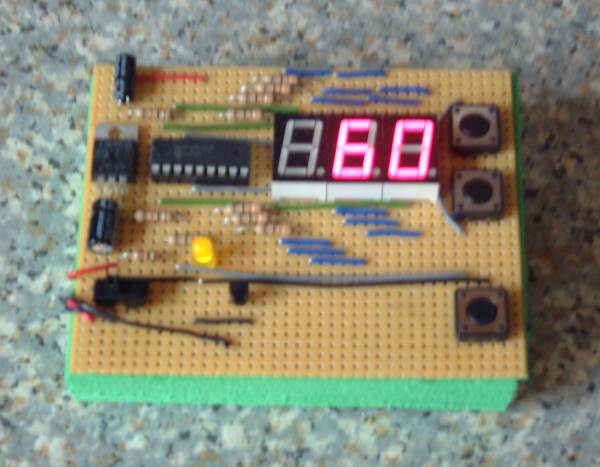
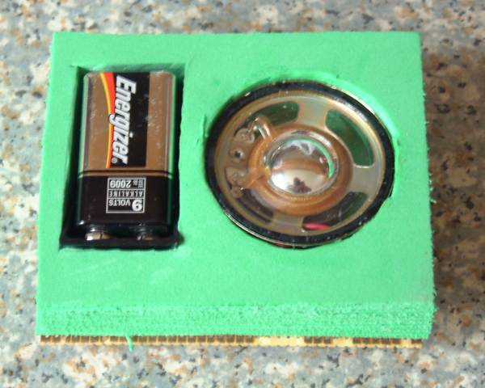

There are several guitarists in my household so on a trip to the local Maplin I bought a Velleman metronome kit but was rather disappointed by the result. The circuit used a variable resister and capacitor arrangement to tune the beats per minute buts its very hard to set to a specific BPM rate.
I thought I must be able to do better with a PIC! The resulting design uses a 16F628 running off its internal oscillator to beat out time. Click here to see the schematics in a new window.
The firmware uses all three timers available on this device. The 8-bit TMR0 is used to generate an interrupt source for the display multiplexing and is used during button debouncing. The 16-bit TMR1 is used in conjunction with hardware pre-scaling and software post-scaling to generate the BPM period. Finally the 8-bit TMR2 is used to generate a PWM signal to produce a tone on the speaker when its is enabled. The built in EEPROM memory is used to save the state of the device between uses.

As you can see from the picture above I built the metronome on standard strip board (running top to bottom). The buttons beside the LEDs select the BPM rate. The lower button toggles the speaker mute function. The speaker and battery holder are on the back recessed into holes cut into a foam block (itself made from several thin foam sheets glued together). Not especially neat but it does the job.

Let me know if you build one.
The following ZIP contains all the PIC assembler need to program the metronome. The code is in two pieces: one project builds a library of PIC routines (including start power up modules) and another contains the project specific code. Build the library first.
| << Back |
|
Contents | Next >> |
© Copyright 2009 Andrew John Jacobs. All rights reserved.
All trademarks and service marks are the properties of their respective owners.